Losangeles, where the Andes whisper ancient tales and the stones of Machu Picchu tell secrets of the past..
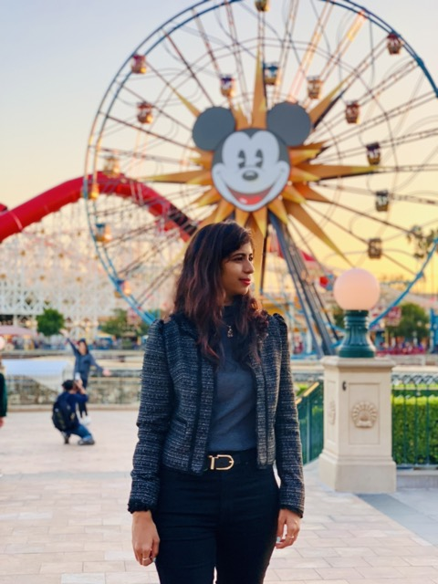
Cycling through the streets
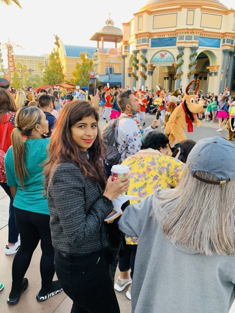
La Marina Lighthouse
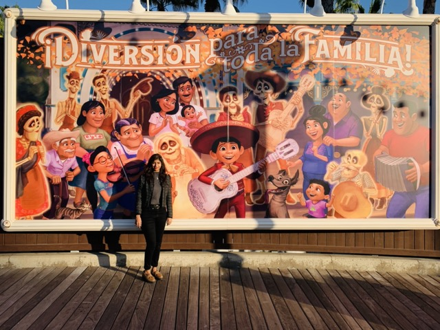
Love Park
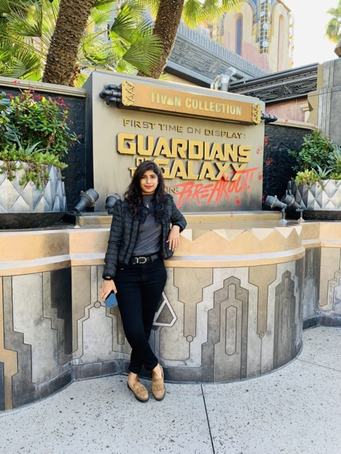
Street art in Barranco
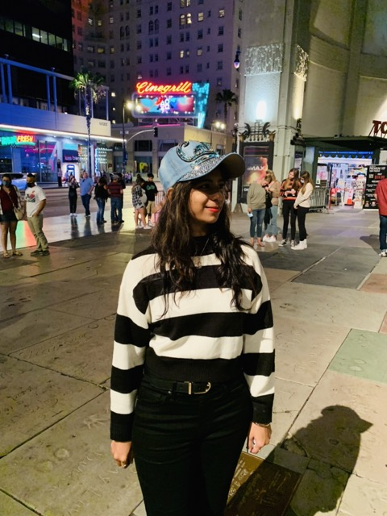
Street art in Barranco
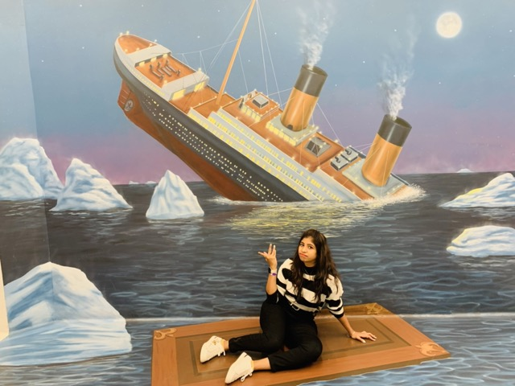
Beautiful architecture
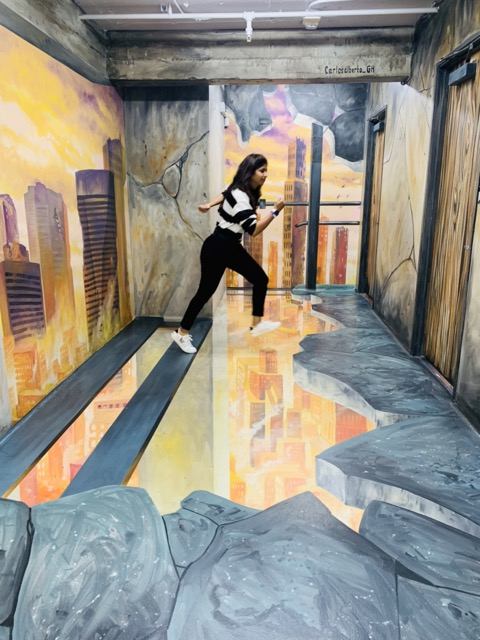
Park GuellBeach view
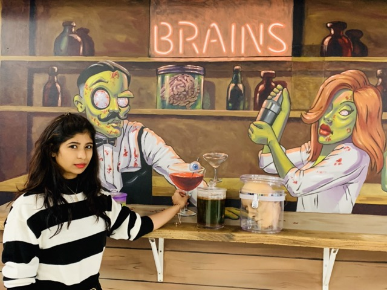
City skyline
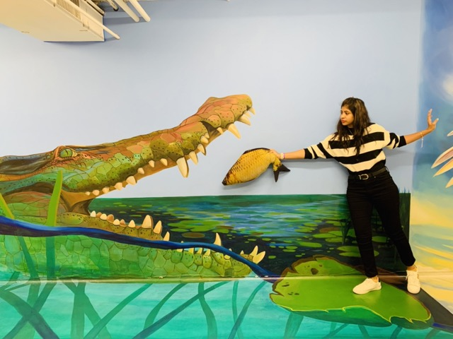
Historic architecture
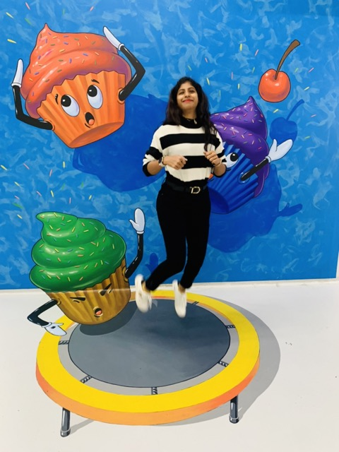
Image 11
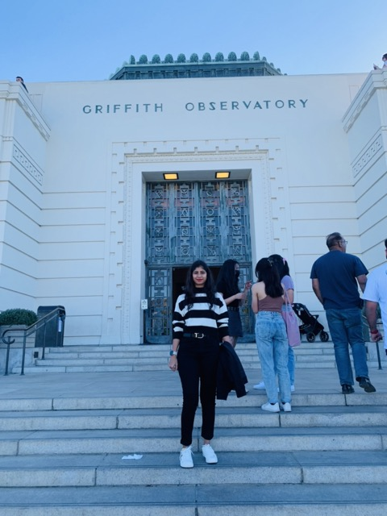
Image 12
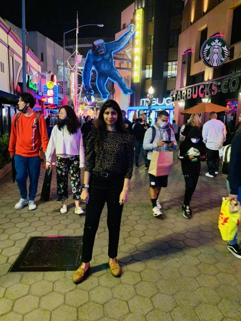
Image 13
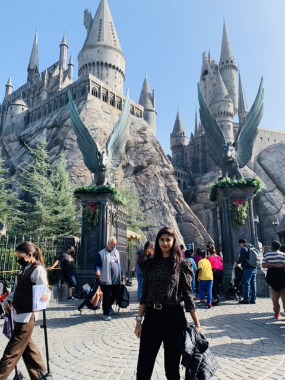
Image 14
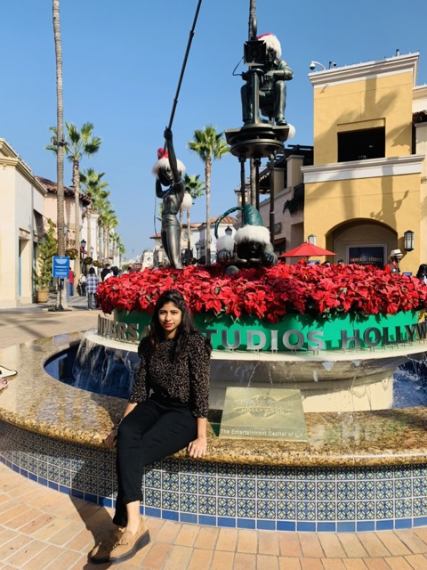
Image 15
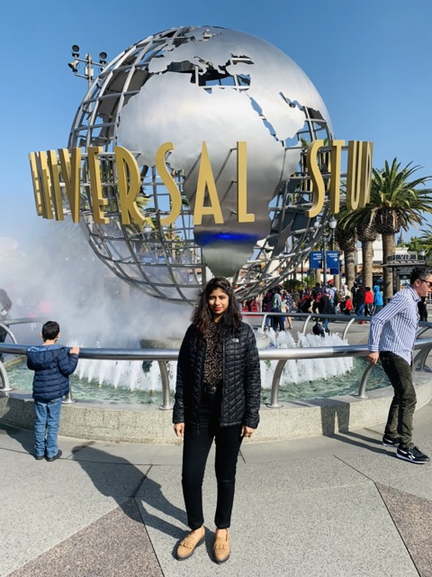
Image 16
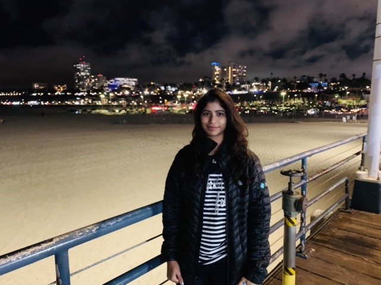
Image 17
Losangeles, where the Andes whisper ancient tales and the stones of Machu Picchu tell secrets of the past.